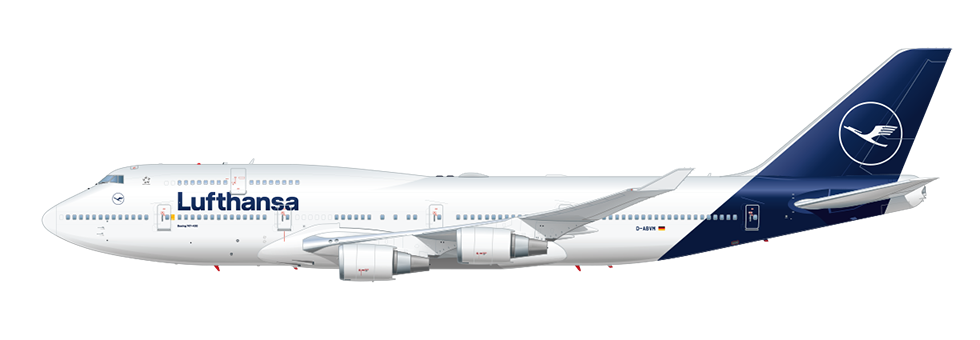
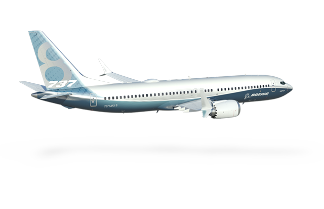
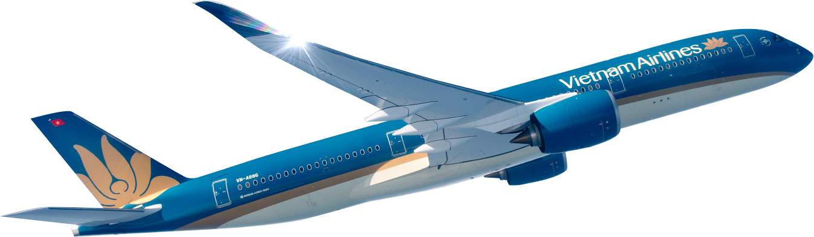

So Wanna take a flight?

The Boeing 747 is a long-range wide-body airliner designed and manufactured by Boeing Commercial Airplanes in the United States between 1968 and 2023. It was conceived in response to the demand of Pan Am for a jet 2+1⁄2 times the size of the 707, which had been introduced in October 1958, to reduce the airline's seat cost by 30%. The design team was led by Joe Sutter, who left the 737 development program in 1965 to design the 747. In April 1966, Pan Am ordered 25 Boeing 747-100 aircraft, and in late 1966, Pratt & Whitney agreed to develop the JT9D engine, a high-bypass turbofan. On September 30, 1968, the first 747 was rolled out of the purpose-built Everett Plant, the world's largest building by volume. The 747's first flight took place on February 9, 1969, and the 747 was certified in December 1969. It entered service with Pan Am on January 22, 1970. The 747 was the first airplane called a "Jumbo Jet" as the first wide-body airliner.
Wanna know more?
The Boeing 737 is an American narrow-body aircraft produced by Boeing at its factories in Washington state. Developed to supplement the Boeing 727 on short and thin routes, the twinjet retained the 707 fuselage width and six abreast seating but with two underwing Pratt & Whitney JT8D low-bypass turbofan engines. Envisioned in 1964, the initial 737-100 made its first flight in April 1967 and entered service in February 1968 with Lufthansa. The lengthened 737-200 entered service in April 1968, and evolved through four generations, offering several variants for 85 to 215 passengers.
Wanna know more?
The Boeing 787 Dreamliner, often shortened to Boeing 787, is an American wide-body airliner developed and manufactured by Boeing Commercial Airplanes. After dropping its unconventional Sonic Cruiser project, Boeing announced the conventional 7E7 on January 29, 2003, which focused largely on efficiency. The program was launched on April 26, 2004, with an order for 50 aircraft from All Nippon Airways (ANA), targeting a 2008 introduction. On July 8, 2007, a prototype 787 without major operating systems was rolled out; subsequently the aircraft experienced multiple delays, until its maiden flight on December 15, 2009. Type certification was received in August 2011, and the first 787-8 was delivered in September 2011 and entered commercial service in October 2011, with ANA.
Wanna know more?